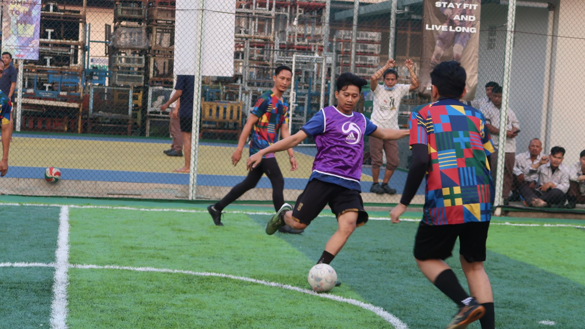

HUT IPPI

SPORT TOURNAMENT

FAMILY DAY
PT Inti Pantja Press Industri yang merupakan bagian dari Astra Group. PT Inti Pantja Press Industri bergerak di bidang manufaktur komponen kendaraan bermotor. Perusahaan ini memproduksi berbagai macam komponen berbagai jenis komponen otomotif.
PT Inti Pantja Press Industri memiliki tenaga kerja profesional dan terampil. Mereka berperan penting dalam mendukung operasi harian perusahaan dan memastikan bahwa setiap produk yang dihasilkan sesuai dengan standar kualitas industri otomotif yang ketat.